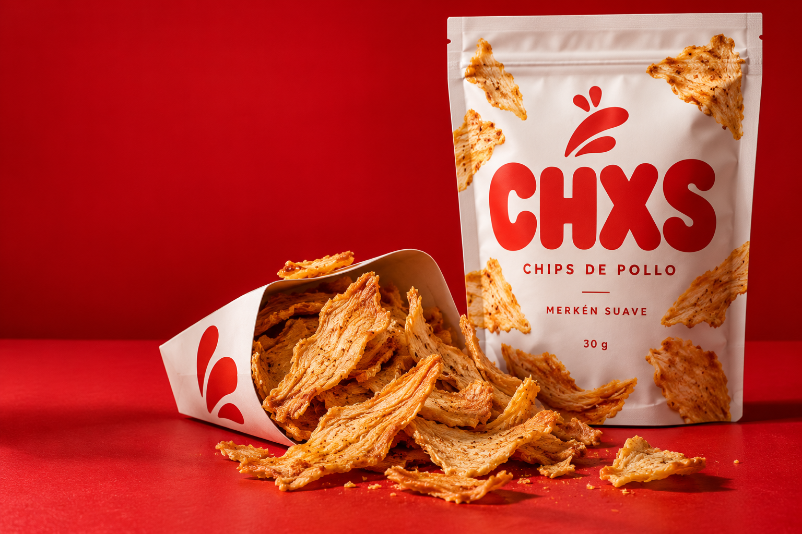
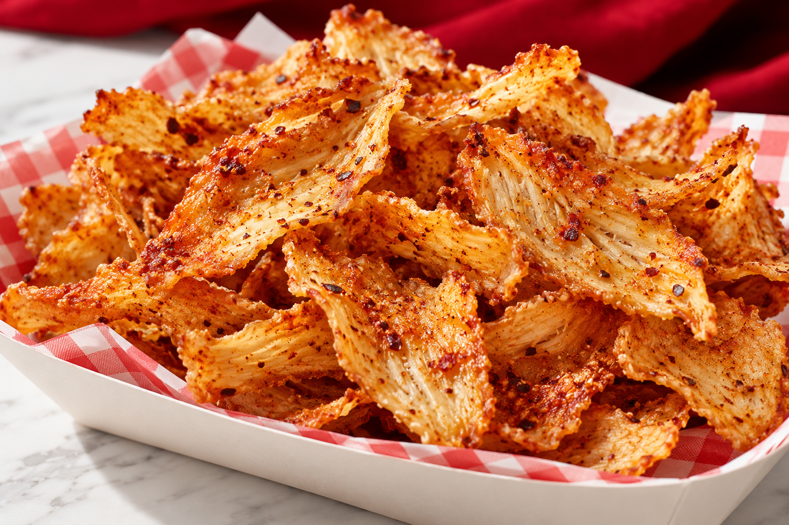

Desarrollar
el chip.
Pollo, crocancia y proteína con un proceso validado.

POLLO REAL. OTRA FORMA DE DISFRUTARLO.
Todo el carácter del pollo.
En un chip que cambia el juego.
Una idea simple. Una textura inesperada.
Chips de pollo con merkén suave,
pensados para acompañar tu ritmo.

MERKÉN SUAVE ↗Formato individual propuesto
Proteína por bolsa como meta
Actitud de snack. Base de pollo.
Concepto en desarrollo. Fórmula, aporte nutricional y vida útil por validar. Imágenes conceptuales; el envase ilustrado indica 30 g y no representa el formato propuesto de 50 g.
HAY UNA IDEA. AHORA HAY QUE PROBARLA.
Crecimiento de ingresos de carne seca
en la base del caso, 2019–2023.
El chip de pollo necesita validación propia en Chile. Probar sabor, precio y recompra es el punto de partida.
Así lo vamos a medir ↗Fuente: Excel del caso, 2019–2023. No es una medición del mercado chileno.
Pollo, crocancia y proteína con un proceso validado.
Campus y gimnasios, con los permisos y acuerdos necesarios.
Margen por unidad y una segunda compra pagada.
Ruta principal: nuevo producto. El diagnóstico operativo del cliente aún debe confirmarse.
Explora el escenario base.
Mueve los supuestos y observa la contribución.
de contribución por bolsa
30% del ingreso netoSimulación ilustrativa · CLP por unidad
Escenario del equipo, sin cotizaciones. Precio al público e ingreso neto requieren conciliación comercial. Los ajustes del simulador no modifican el escenario original.
LA RECOMENDACIÓN
Tope de presupuesto
TRES SEÑALES PARA AVANZAR
Evaluar la aceptación del producto en el piloto.
Medir la segunda compra pagada, a 30 días.
Validar ingreso neto menos costo variable por bolsa vendida.
Metas propuestas. La liberación técnica precede toda degustación o venta.
Volver al primer crunch ↑